Absolute Value Functions
Until the 1920s, the so-called spiral nebulae were believed to be clouds of dust and gas in our own galaxy, some tens of thousands of light years away. Then, astronomer Edwin Hubble proved that these objects are galaxies in their own right, at distances of millions of light years. Today, astronomers can detect galaxies that are billions of light years away. Distances in the universe can be measured in all directions. As such, it is useful to consider distance as an absolute value function. In this section, we will investigate absolute value functions.
Understanding Absolute Value
Recall that in its basic form the absolute value function, is one of our toolkit functions. The absolute value function is commonly thought of as providing the distance the number is from zero on a number line. Algebraically, for whatever the input value is, the output is the value without regard to sign.
Determine a Number within a Prescribed Distance
Describe all values within or including a distance of 4 from the number 5.
Solution
We want the distance between and 5 to be less than or equal to 4. We can draw a number line, such as the one in Figure 2, to represent the condition to be satisfied.
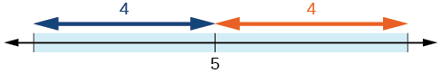
The distance from to 5 can be represented using the absolute value as We want the values of that satisfy the condition
Resistance of a Resistor
Electrical parts, such as resistors and capacitors, come with specified values of their operating parameters: resistance, capacitance, etc. However, due to imprecision in manufacturing, the actual values of these parameters vary somewhat from piece to piece, even when they are supposed to be the same. The best that manufacturers can do is to try to guarantee that the variations will stay within a specified range, often or
Suppose we have a resistor rated at 680 ohms, Use the absolute value function to express the range of possible values of the actual resistance.
Solution
5% of 680 ohms is 34 ohms. The absolute value of the difference between the actual and nominal resistance should not exceed the stated variability, so, with the resistance in ohms,
Graphing an Absolute Value Function
The most significant feature of the absolute value graph is the corner point at which the graph changes direction. This point is shown at the origin in Figure 3.
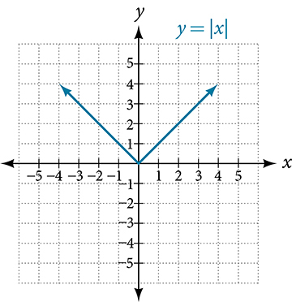
Figure 4 shows the graph of The graph of has been shifted right 3 units, vertically stretched by a factor of 2, and shifted up 4 units. This means that the corner point is located at for this transformed function.
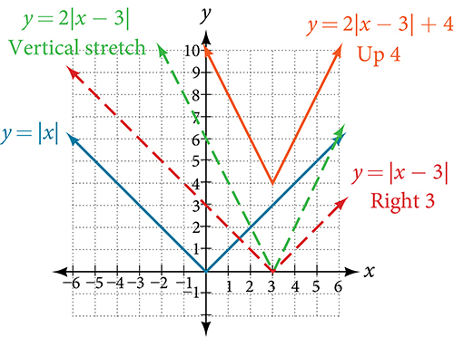
Writing an Equation for an Absolute Value Function
Write an equation for the function graphed in Figure 5.
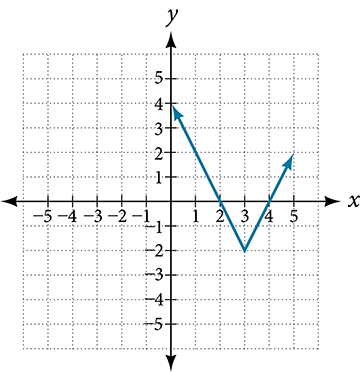
Solution
The basic absolute value function changes direction at the origin, so this graph has been shifted to the right 3 units and down 2 units from the basic toolkit function. See Figure 6.
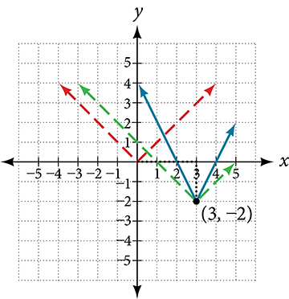
We also notice that the graph appears vertically stretched, because the width of the final graph on a horizontal line is not equal to 2 times the vertical distance from the corner to this line, as it would be for an unstretched absolute value function. Instead, the width is equal to 1 times the vertical distance as shown in Figure 7.
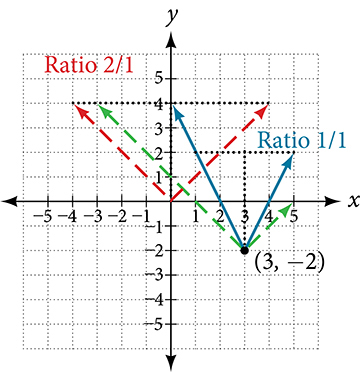
From this information we can write the equation
Analysis
Note that these equations are algebraically equivalent—the stretch for an absolute value function can be written interchangeably as a vertical or horizontal stretch or compression. Note also that if the vertical stretch factor is negative, there is also a reflection about the x-axis.
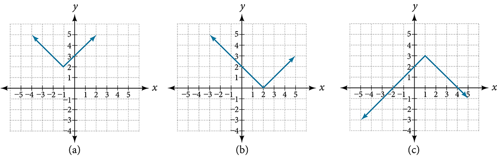
Solving an Absolute Value Equation
Now that we can graph an absolute value function, we will learn how to solve an absolute value equation. To solve an equation such as we notice that the absolute value will be equal to 8 if the quantity inside the absolute value is 8 or -8. This leads to two different equations we can solve independently.
Knowing how to solve problems involving absolute value functions is useful. For example, we may need to identify numbers or points on a line that are at a specified distance from a given reference point.
An absolute value equation is an equation in which the unknown variable appears in absolute value bars. For example,
Finding the Zeros of an Absolute Value Function
For the function , find the values of such that .
Solution
| Substitute 0 for f(x). | |
| Isolate the absolute value on one side of the equation. | |
| Break into two separate equations and solve. |
The function outputs 0 when or See Figure 9.
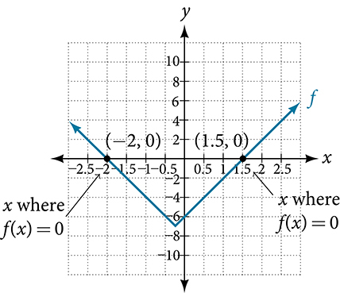
Solving an Absolute Value Equation
Solve
Solution
Isolating the absolute value on one side of the equation gives the following.
The absolute value always returns a positive value, so it is impossible for the absolute value to equal a negative value. At this point, we notice that this equation has no solutions.
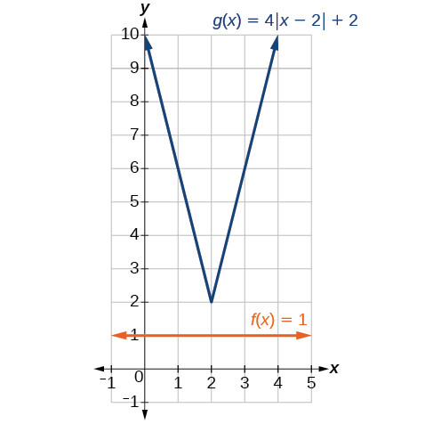
Solving an Absolute Value Inequality
Absolute value equations may not always involve equalities. Instead, we may need to solve an equation within a range of values. We would use an absolute value inequality to solve such an equation. An absolute value inequality is an equation of the form
where an expression (and possibly but not usually ) depends on a variable Solving the inequality means finding the set of all that satisfy the inequality. Usually this set will be an interval or the union of two intervals.
There are two basic approaches to solving absolute value inequalities: graphical and algebraic. The advantage of the graphical approach is we can read the solution by interpreting the graphs of two functions. The advantage of the algebraic approach is it yields solutions that may be difficult to read from the graph.
For example, we know that all numbers within 200 units of 0 may be expressed as
Suppose we want to know all possible returns on an investment if we could earn some amount of money within $200 of $600. We can solve algebraically for the set of values such that the distance between and 600 is less than 200. We represent the distance between and 600 as
This means our returns would be between $400 and $800.
Sometimes an absolute value inequality problem will be presented to us in terms of a shifted and/or stretched or compressed absolute value function, where we must determine for which values of the input the function’s output will be negative or positive.
Solving an Absolute Value Inequality
Solve
Solution
With both approaches, we will need to know first where the corresponding equality is true. In this case we first will find where We do this because the absolute value is a function with no breaks, so the only way the function values can switch from being less than 4 to being greater than 4 is by passing through where the values equal 4. Solve
After determining that the absolute value is equal to 4 at and we know the graph can change only from being less than 4 to greater than 4 at these values. This divides the number line up into three intervals:
To determine when the function is less than 4, we could choose a value in each interval and see if the output is less than or greater than 4, as shown in Table 1.
| Interval test | or | ||
|---|---|---|---|
| 0 | Greater than | ||
| 6 | Less than | ||
| 11 | Greater than | ||
Because is the only interval in which the output at the test value is less than 4, we can conclude that the solution to is or
To use a graph, we can sketch the function To help us see where the outputs are 4, the line could also be sketched as in Figure 11.
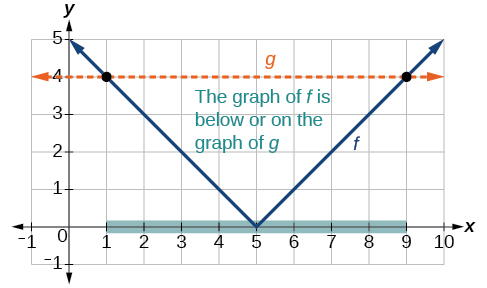
We can see the following:
- The output values of the absolute value are equal to 4 at and
- The graph of is below the graph of on This means the output values of are less than the output values of
- The absolute value is less than or equal to 4 between these two points, when In interval notation, this would be the interval
Analysis
For absolute value inequalities,
The or symbol may be replaced by
So, for this example, we could use this alternative approach.
Using a Graphical Approach to Solve Absolute Value Inequalities
Given the function determine the values for which the function values are negative.
Solution
We are trying to determine where which is when We begin by isolating the absolute value.
Next we solve for the equality
Now, we can examine the graph of to observe where the output is negative. We will observe where the branches are below the x-axis. Notice that it is not even important exactly what the graph looks like, as long as we know that it crosses the horizontal axis at and and that the graph has been reflected vertically. See Figure 12.
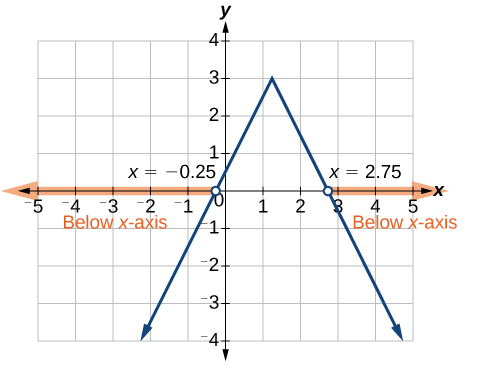
We observe that the graph of the function is below the x-axis left of and right of This means the function values are negative to the left of the first horizontal intercept at and negative to the right of the second intercept at This gives us the solution to the inequality.
In interval notation, this would be
Key Concepts
- The absolute value function is commonly used to measure distances between points. See Example 1.
- Applied problems, such as ranges of possible values, can also be solved using the absolute value function. See Example 2.
- The graph of the absolute value function resembles a letter V. It has a corner point at which the graph changes direction. See Example 3.
- In an absolute value equation, an unknown variable is the input of an absolute value function.
- If the absolute value of an expression is set equal to a positive number, expect two solutions for the unknown variable. See Example 4.
- An absolute value equation may have one solution, two solutions, or no solutions. See Example 5.
- An absolute value inequality is similar to an absolute value equation but takes the form It can be solved by determining the boundaries of the solution set and then testing which segments are in the set. See Example 6.
- Absolute value inequalities can also be solved graphically. See Example 7.
Section Exercise
Verbal
How do you solve an absolute value equation?
Solution
Isolate the absolute value term so that the equation is of the form Form one equation by setting the expression inside the absolute value symbol, equal to the expression on the other side of the equation, Form a second equation by setting equal to the opposite of the expression on the other side of the equation, Solve each equation for the variable.
How can you tell whether an absolute value function has two x-intercepts without graphing the function?
When solving an absolute value function, the isolated absolute value term is equal to a negative number. What does that tell you about the graph of the absolute value function?
Solution
The graph of the absolute value function does not cross the -axis, so the graph is either completely above or completely below the -axis.
How can you use the graph of an absolute value function to determine the x-values for which the function values are negative?
How do you solve an absolute value inequality algebraically?
Solution
First determine the boundary points by finding the solution(s) of the equation. Use the boundary points to form possible solution intervals. Choose a test value in each interval to determine which values satisfy the inequality.
Algebraic
Describe all numbers that are at a distance of 4 from the number 8. Express this using absolute value notation.
Describe all numbers that are at a distance of from the number −4. Express this using absolute value notation.
Solution
Describe the situation in which the distance that point is from 10 is at least 15 units. Express this using absolute value notation.
Find all function values such that the distance from to the value 8 is less than 0.03 units. Express this using absolute value notation.
Solution
For the following exercises, solve the equations below and express the answer using set notation.
Solution
Solution
Solution
Solution
Solution
Solution
No solution
Solution
For the following exercises, find the x- and y-intercepts of the graphs of each function.
Solution
Solution
no -intercepts
For the following exercises, solve each inequality and write the solution in interval notation.
Solution
Solution
Solution
Solution
Graphical
For the following exercises, graph the absolute value function. Plot at least five points by hand for each graph.
Solution
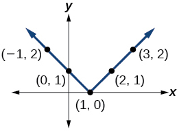
Solution
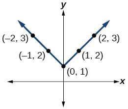
For the following exercises, graph the given functions by hand.
Solution
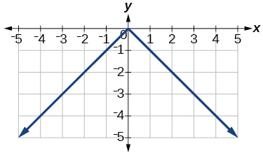
Solution
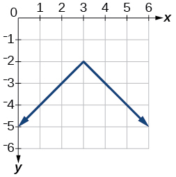
Solution
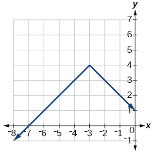
Solution
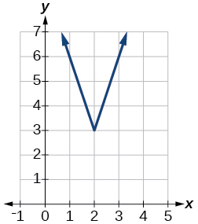
Solution
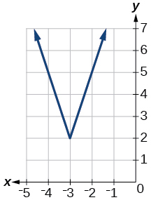
Solution
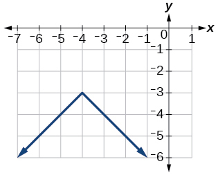
Technology
Use a graphing utility to graph on the viewing window Identify the corresponding range. Show the graph.
Solution
range:
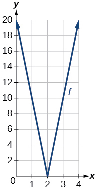
Use a graphing utility to graph on the viewing window Identify the corresponding range. Show the graph.
For the following exercises, graph each function using a graphing utility. Specify the viewing window.
Solution
intercepts:
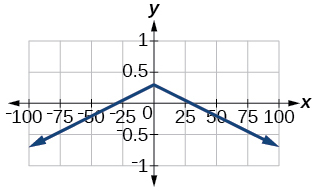
Extensions
For the following exercises, solve the inequality.
Solution
If possible, find all values of such that there are no intercepts for
If possible, find all values of such that there are no -intercepts for
Solution
There is no solution for that will keep the function from having a -intercept. The absolute value function always crosses the -intercept when
Real-World Applications
Cities A and B are on the same east-west line. Assume that city A is located at the origin. If the distance from city A to city B is at least 100 miles and represents the distance from city B to city A, express this using absolute value notation.
The true proportion of people who give a favorable rating to Congress is 8% with a margin of error of 1.5%. Describe this statement using an absolute value equation.
Solution
Students who score within 18 points of the number 82 will pass a particular test. Write this statement using absolute value notation and use the variable for the score.
A machinist must produce a bearing that is within 0.01 inches of the correct diameter of 5.0 inches. Using as the diameter of the bearing, write this statement using absolute value notation.
Solution
The tolerance for a ball bearing is 0.01. If the true diameter of the bearing is to be 2.0 inches and the measured value of the diameter is inches, express the tolerance using absolute value notation.
Analysis
Note that
So is equivalent to
However, mathematicians generally prefer absolute value notation.